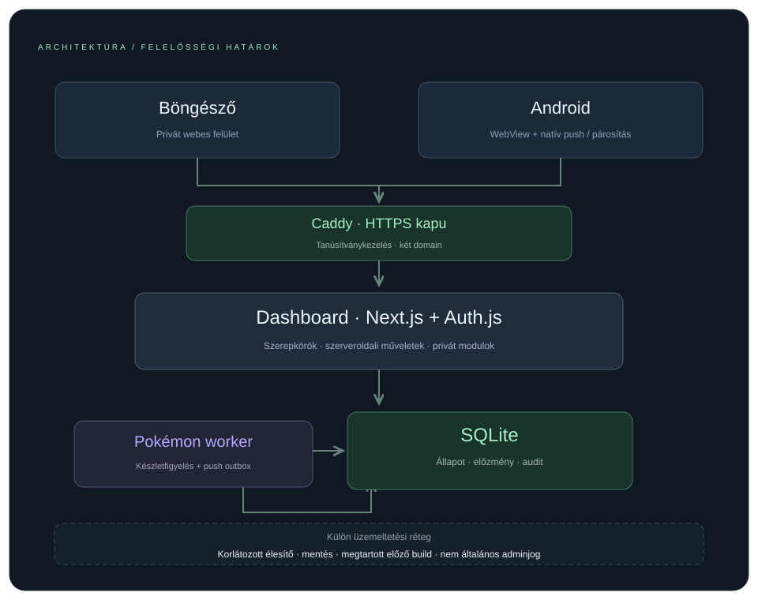
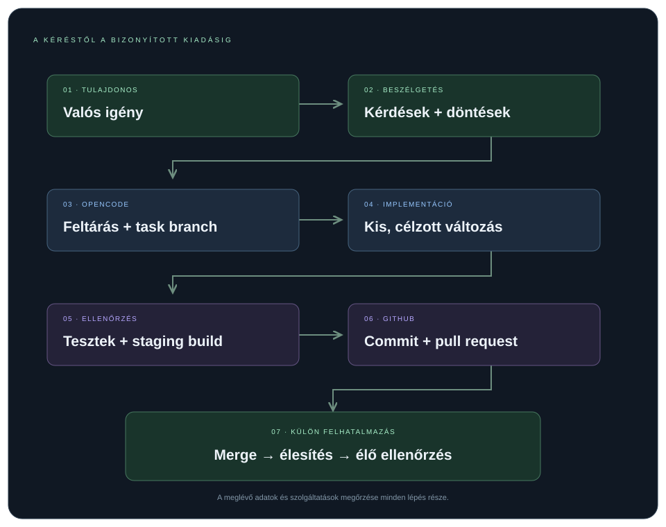
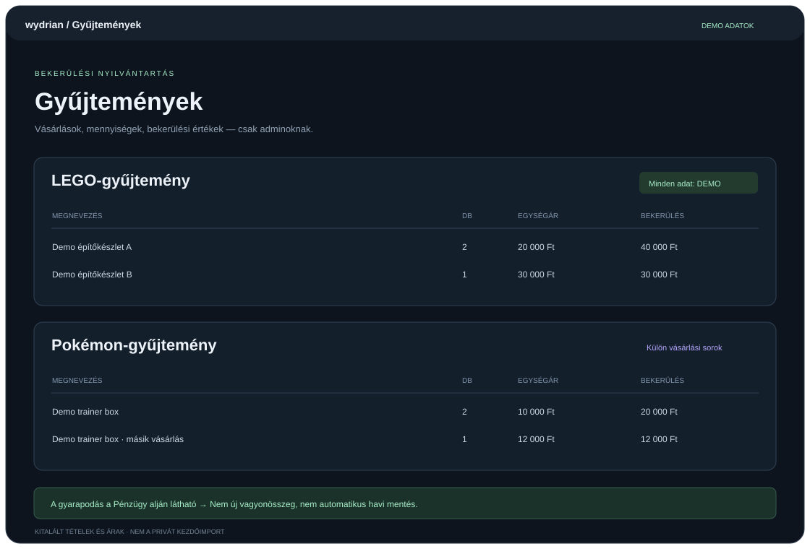
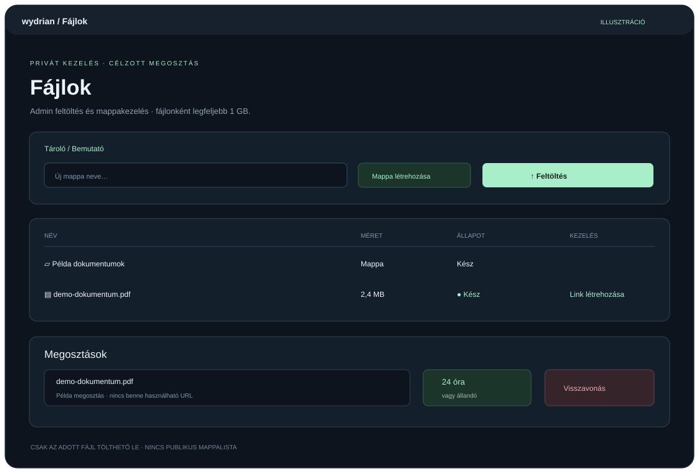

A visszafejtőkulcsot a szervertől függetlenül kell őrizni.

Külön szolgáltatások · közös, mentett adatok
07 / TÁVOLI FEJLESZTÉS2026. OKTÓBER 3.
OpenCode a dashboardból.
A tulajdonos weben és telefonról is eléri a gépen futó OpenCode saját felületét, a meglévő beszélgetésekkel.
Kizárólag tulajdonosi hozzáférés.
Kérésből külön feladatág és tesztelt pull request.
A forrás GitHubon; a privát adatok a NAS-on.
A merge és az élesítés külön jóváhagyást igényel.

A kérésből ellenőrzött fejlesztés lesz
08 / INFORMÁCIÓK ÉS JOGOK2026. OKTÓBER 2. → 6.
Mindenki azt látja, ami rá tartozik.
Szerepkörök
Admin: teljes hozzáférés. Pokémon-reader: készletfigyelő és saját értesítések. Info-reader: engedélyezett információk, csak olvasás.
Fontos infók
Admin által szerkeszthető, formázott tájékoztatók és engedélyezett pénzügyi összefoglaló.
Határidő-emlékeztetők
A teendők határidőt kaphatnak. A közelgő és lejárt feladatokról a rögzítő saját telefonjaira megy push.
09 / GYŰJTEMÉNYEK2026. OKTÓBER 7.
Bekerülés. Mai piaci érték.
A LEGO- és Pokémon-nyilvántartás külön adminoldalt kapott. Vásárlási dátum, darabszám, egységár és teljes bekerülés.
GyűjteményértékCollectr és BrickEconomy alapján lekért aktuális becslés.
GyarapodásNominális és inflációval korrigált összevetés a bekerüléssel.
Mentett és aktuálisA pénzügyi oldalon külön látható a mentett érték, a mai becslés és az eltérés.

DEMO · nem az importált állomány
10 / FÁJLTÁROLÓ2026. OKTÓBER 7–8.
Feltöltés. Megosztás. Visszavonás.
Saját admin fájltároló, mappákkal. A címzettnek nem kell bejelentkeznie az egyetlen fájlra szóló megosztási linkhez.
Fájlonként legfeljebb 1 GB.
Több fájl kijelölése, feltöltési haladás és megszakítás.
Lejáró vagy állandó, visszavonható letöltési link.
Azonos név nem írja felül a meglévő fájlt.
Megerősített törléskor a fájl megosztásai is megszűnnek.

Nincs működő megosztási link
11 / SAJÁT ELRENDEZÉS2026. OKTÓBER 7–8.
A fontos rész kerülhet előre.
Az alkalmazásoldalak tartalmi blokkjainak sorrendje személyre szabható — a pénzügyi grafikonoktól az egyes webshopokig.
Oldalankénti sorrend
A fel/le gombok egy hellyel mozgatják a blokkot. A megadott sorrend a böngészőben megmarad.
Tiszta alapnézet
A rendezőnyilak alapból rejtettek. Egy közös kapcsolóval megjeleníthetők minden alkalmazásoldalon.
Megmaradó munkák
A rendezés nem törli a kitöltött űrlapot vagy a vázlatot, és nem módosít szerveroldali adatot.
12 / MINTAPROMPTOKKÉRÉSBŐL FUNKCIÓ
Így indult két nagyobb fejlesztés.
Valódi sessionkérések rövidített, átfogalmazott változatai, személyes és technikai azonosítók nélkül. Nem szó szerinti idézetek.
Dashboard · szeptember 30.
Van egy állandóan online Windows NAS-om. Szeretnék HTTPS-en elérhető dashboardot, szolgáltatásállapotokkal és RSS-hírolvasóval. Később új modulokkal bővíteném. Bárhonnan legyen elérhető, Google-belépéssel. Hogyan induljunk?
Ebből lett az első webes felület és a bővíthető alap.
Android-app · október 1.
Szeretnék egy egyszerű Android-appot, ami WebView-ban megnyitja a dashboardot, és push üzenetet fogad a szerverről, például új Pokémon-készletről. Firebase-projektet tudok hozzá létrehozni. Meg tudjuk csinálni?
Ebből lett a párosított mobilapp és a szerveroldali push.
13 / MÉRFÖLDKÖVEKSZEPTEMBER 30. – OKTÓBER 9.
A lényeg, időrendben.
Dashboard és RSS
Google-belépés, rendszeradatok, időjárás, gyorslinkek és jegyzetek.
Készletfigyelő és Android
Tizenkét webshop, közös eseménylista, párosított mobilapp és push.
Pénzügy és olvasói hozzáférés
Excelből havi nyilvántartás; külön admin és Pokémon-reader.
Felhős mentés és távoli fejlesztés
Hajnalban még GitHub előtt: költözés, titkosított backup. Utána: forrásrepó és tulajdonosi OpenCode.
Infók, emlékeztetők, appfrissítés
Fontos infók és info-reader, határidő-push, biztonságos Android-frissítő.
Gyűjtemények, fájlok, saját nézet
Piaci érték és bekerülés; megosztható fájlok; rendezhető tartalmi blokkok.
Jövőbiztos boltbővítés
Bloomrift, a 15. webshop; hitelesített mobil boltszabályok új APK helyett.
Legutóbbi ellenőrzött kiadás: Web 1.4.6 · Android 1.1.4. A bemutató nyilvános; az alkalmazás és az adatok jogosultságvédettek.
Forrás: sessionelőzmények, Git-történet és projekt-dokumentáció, 2026. október 10-ig. Minden kép szintetikus illusztráció. A mintapromptok átfogalmazottak. Nincs személyes pénzügyi adat, fiók vagy használható megosztási token. Önálló statikus bemutató.